Updated 17 days ago(17天前更新)
Share on Twitter Facebook Google+(在Twitter，Facebook，Google 共享)
In the previous article I talked about steps() in CSS animation, and provided a simple example (the ticking second hand of an analog watch). The same core techniques can be used for more complex animation, including a cartoon figure’s walk cycle.
(在以前的文章中我讲到了css动画的步骤,并提供了一个简单的例子（针表秒针的滴答声）。相同的核心技术可以用于更加复杂动画，例如卡通人物的行走动画。)
Stack(堆栈)
Traditional cartoon animation creates the impression of motion by showing a series of quick sequenced drawings. During the design and creation phase of the animation these drawings are stacked vertically in “onionskin” layer, allowing the artist to compare them quickly. The same can be achieved by placing drawings on different layers in a modern illustration tool like Adobe Illustrator, as shown in Figure 1:
(传统卡通动画通过一系列快速有序的图画创建运动效果。在动画的设计和创建阶段，这些图纸垂直堆放在（onionskin，洋葱皮）“透明薄纸”层，允许艺术家很快去比较他们。同样可以通过在现代插画的工具如Adobe illustrator把图纸放置在不同的图层来实现。如图1所示：)
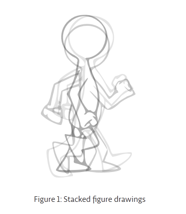
Note that no part of the figure remains in the exact same position during the walk cycle: for example, the figure’s head bobs slightly up and down, adding to the sense of motion.
(请注意在行走周期中部分图片没有精确的保持在相同的位置：比如，图片中的头部略微的上下摆动，曾添了运动感。)
I’ll be exporting the drawings as an SVG in order to take advantage of the format’s small (the final size of the optimized file is just over 13K) scaleless nature, but the same technique could be used with a bitmap image.
(我为了利用格式小（优化过的文件最终大小只超过13k）无标度的性质，将会以SVG输出图像，但是相同的技术可以被用于位图。)
Walk(行走)
Extending the traditional method, the individual drawings are then distributed in a horizontal “filmstrip”, shown in Figure 2:
(延伸传统的方法，个人的图纸接着被放置在水平的“幻灯片”，如图2所示：)
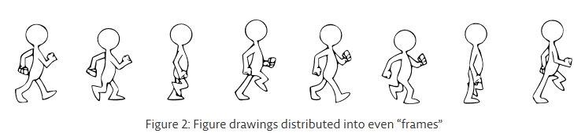
The sequence remains the same, but now “reads” from left to right.
(排列保持不变，但是现在从左到右读取。)
You can achieve this distribution in Illustrator by selecting the path on each layer and using Object / Transform / Move with increasing values that are multiples of the original artboard width.
(你可以通过选择 各自的路径 并且 使用 对象/变化/移动 增加原始画板宽度倍数的值 )在illustrator 中实现这一布局。
The “canvas” area is extended to cover all of the drawings. In this case, each individual “frame” has an area of 250 × 320 pixels.
(“画布”的区域被延伸到覆盖所有的图纸。在这样的情况下，每个单独的边框区域为250x320像素。)
Step(步骤)
Our next task is to switch quickly between one drawing and the next, like film running through a camera. Ideally, we would be able to animate the viewBox to move quickly across the scene from one “frame” to the next, but unfortunately we can’t yet animate that with CSS. Instead, we’ll create a container element that is the same aspect ratio as one of the drawings, and apply the exported SVG as a background-image to an element inside it:
(我们的下一个任务是在一个图和另一个图之间迅速切换，好像通过相机运行的电影
理想的情况下，我们将能够驱动 viewbox 从一个“框架”到下一个快速移动整个场景，
但是不幸的是我们还不能在css使用。相反，我们将创建一个纵横比相同的容器元素作为一个图纸，并且应用svg输出作为背景图像里的元素。
)
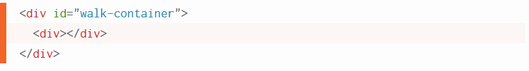
The css
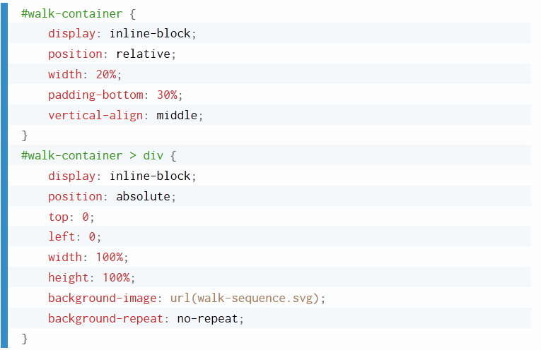
It so happens that the technique of a container-inside-a-container will also work to make the SVG responsive in IE9 - 11.(凑巧，这种container-inside-a-container
（容器内的容器）技术也会为了让svg在ie9-11响应而工作。)
By default the entire SVG “filmstrip” will be visible inside the inner container. We need to make this image large enough so that only one “frame” is visible. This value will be 100 times the number of frames, expressed as a percentage:
(默认情况下，整个svg“幻灯片” 将在内容器内部可见。我们要让这张图片足够大，便于只有一个“框架”是可见的。这个值是框架的100倍，表示为百分比：)
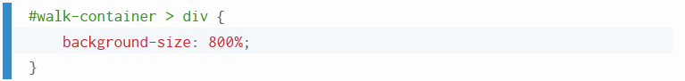
Now we need to move the filmstrip through the limited viewport of the #walk-container. That means moving to the end of the filmstrip, which we can express in a CSS keyframe animation that changes the position of the background:
(现在我们需要移动幻灯片穿过有限的行走容器视图窗口。
这意味着移动幻灯片到结束，我们可以用css关键帧动画表示背景位置的改变。
。)
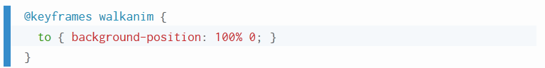
To run the animation, we’ll start with this:
(运行动画，我们就从这开始)
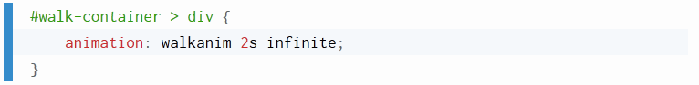
The result is not exactly what we’re after. You can see what happens in Figure 3:
(结果并不是我们追求的。你可以看到图三发生了什么：)
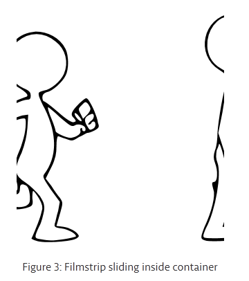
Marching in Place(原地踏步)
What we need is the animation moving instantaneously between one frame and the next. To achieve this, we’ll divide the animation into separate steps. That way, each frame will be shown once, with no transition between them. The animation call shown above turns into:
(我们需要的是动画在一个框架到下一个之间快速的移动。为了实现这个，我们将会把动画分成单独的步骤。这样，每一帧将会显示一次，在它们之间没有过渡。上面的动画转变成：)
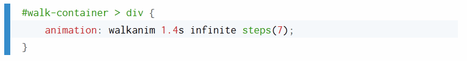
Note that the number of steps is 1 less than the number of drawn frames. The duration of the walk cycle animation will depend on how many frames are on the filmstrip, and will usually require some experimentation.
(注意步骤的数目是1少于绘制帧的数目。行走周期动画循环将取决于有多少帧在幻灯片上
，通常需要一些实验。
)
Stepping Forward(向前走)
So far what we have is only a figure marching in place. This can work if a background is moving behind the character to impart a sense of motion - think classic Saturday morning cartoons - but in this case we’ll say that we want the character moving from left to right across the entire width of the screen. To achieve this, we can “parent” the animation with another, a technique I previously demonstrated for a hypnosis logo. In this case, the added animation will translate the outer container using % units:
(到目前为止，我们只是有一个在原地踏步的帧。如果背景是在后面移动这可以工作去赋予人一种运动感-认为是经典的周六卡通-但是这种情况下，我们会说，我们希望人物从左到右移动铺满整个屏幕。为了实现这一点，我们可以用另一个“父”动画，一个技术我先前研究过的催眠的标志。这种情况下，添加动画会使用%单位翻译外容器:)
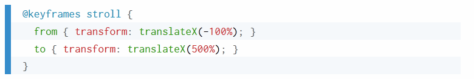
The time taken for this transformation will depend on how you want the animation to appear: too fast, and the figure will look like they are being pushed by a hurricane, while too slow will make it appear that their feet are slipping on an icy surface.
(为这个转变采取的时间将取决于你想要动画怎样出现：太快了，图像看起来会像是被飓风推动，太慢了会让它的脚显示成在冰面上滑动。)
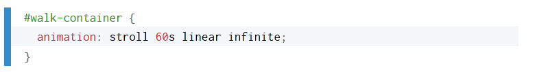
I don’t want the figure’s walk to speed up or slow down at the beginning or end, so I’ve used linear easing for the animation.
(我不希望人物行走的速度在开始或者结束时加快或者减慢，所以我已经使用了线性宽松的动画)
Conclusion(结论)
Once you understand the principles, it’s possible to use these techniques to create many kinds of complex animation on web pages, which I’ll demonstrate in future articles.
(一旦你明白了这些原则，就可以使用这些技术在网页上创建各种复杂的动画，我将在未来的文章中演示。)
Enjoy this piece? I invite you to follow me at twitter.com/dudleystorey to learn more.
(享受这件作品？我邀请你跟我在twitter.com/dudleystorey学习更多。)
Check out the CodePen demo for this article at https://codepen.io/dudleystorey/pen/aNxEBg
(看看这篇文章的https://codepen.io/dudleystorey/pen/anxebg CodePen演示)